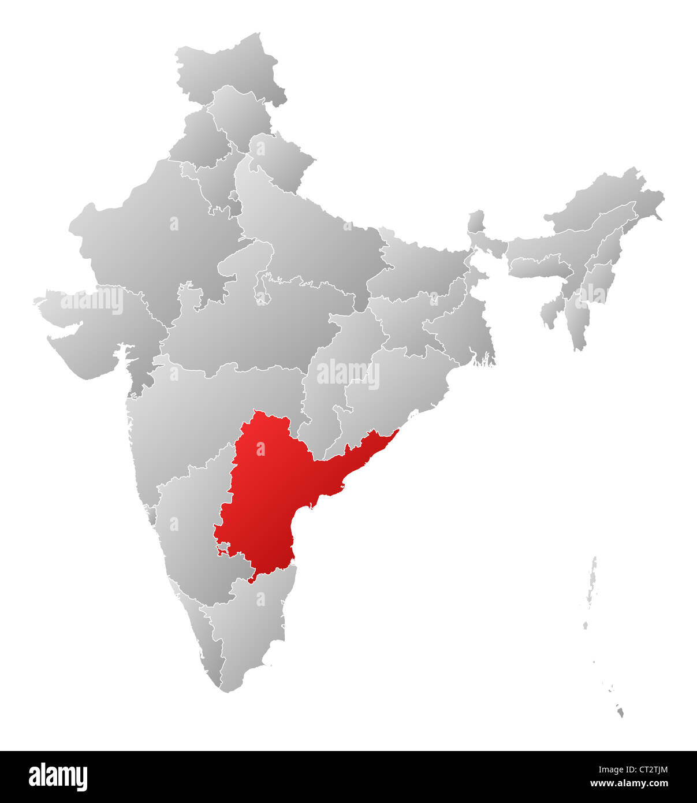

Tolllywood is the Telugu film industry, Tollywood being a mashup of the words "Telugu" and "Hollywood." It is centered in Film Nagar, Hyderabad, a major city in the Indian state of Telangana. Before the split off of Telangana in 2007, the area used to be a part of the large state of Andhra Pradesh. In fact, Hyderabad houses Ramoji Film City, which is in the Guiness Book of World Records for being the largest film studio complex in the world. With the official language of these states being Telugu, the films are made with a Telugu audience in mind. The first Telugu movie was released in 1912, and it was a silent film. Many Telugu films have been blockbusters, and the movie "Baahubali 2" starring Prabhas is the highest-grossing film of all time in India.
The Telugu film industry is ruled by a few families of actors. One of the biggest families is the Konidela Tej family, which has brought generations of actors, such as Chiranjeevi, Pawan Kalyan, Ravi Teja, Sai Dharam Tej, Ram Charan, Allu Arjun, and Varun Tej. Another famous family is the Akkineni family with Nagarjuna Akkineni and Chaitanya Akkineni. There is also the NTR family with Jr. NTR and his grandfather, NTR. Still, there is space for some other actors int the industry who built themselves up or are related to producers or music directors. Some actors like this are Nani, Mahesh Babu, and Prabhas. Out of these actors, the most iconic stars historically are Chiranjeevi and NTR.
The "mass" genre is also very famous in Tollywood, with every major actor releasing at least one such movie per year. Despite decreasing quality, these movies become hits due to the sheer size of these actors' fanbases. However, that is not to undermine the quality of this industry. Many Telugu movies are blockbusters and they deserve to be, especially those directed by S. S. Rajamouli. Gaining fame after the release of the movie "Eega" starring Nani in 2009, he catapulted to national fame with the release of "Baahubali: The Beginning" in 2015 starring Prabhas. Recently, he became of international fame with "RRR" starring Ram Charan and Jr. NTR released in 2022. Tollywood is known for its special effects and its grandeur, so when done tastefully, any movie has the potential to be the next biggest hit.
Every Tollywood movie has at least one song. Similar to Kollywood, older Telugu songs were based on traditional Carnatic music, using its beats and melodies to create the mood of the song. Ilaiyaraja was also a prolific composer for Tollywood, and SPB was a prolific singer. In fact, SPB is actually of Telugu origin! As time progressed, more modern influences came into Telugu music, giving rise to music directors such as Devi Sri Prasad and Thaman S. The music director that always works with S. Rajamouli is a man named M. M. Keeravani. Telugu "mass" intro songs are generally very high-energy, especially since actors like Allu Arjun are talented and trained dancers who can keep up with such beats. Many Telugu heroines, like the up-and-coming Sreeleela, are also trained dancers, and it is a treat to watch hero and heroine dance together.